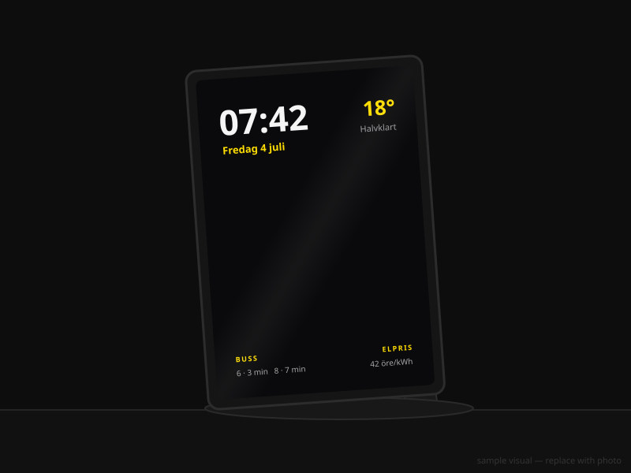
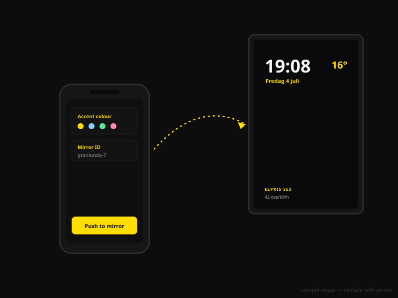

1In the box
- Your reflekt mirror — frame, 6 mm industrial-grade one-way glass and the display already fitted and configured.
- The stand — slots onto the back, no tools needed.
- Power cable — the mirror is designed to stay plugged in.
2Place it

On the stand: slot the stand into the back, set the mirror on a shelf, dresser or desk, and plug it in. It starts by itself.
On the wall: use the mounts on the back to hang it flat, like any other mirror. Hang it near a socket and route the cable down the back edge of the frame.
3Personalise it
Tap the small ⚙ gear in the corner of the glass to open the settings. It's dim on purpose so it disappears behind the mirror when you're not looking for it.
Settings are grouped into five sections. Change anything, then press Start mirror to go back to the glass.
Basics
| Mode | Home is the smart mirror. Business shows your own images or a PDF (see section 5). Stock fills the screen with live market charts. |
| Location | Tap Use my location, or type a place name (e.g. Göteborg). Used for weather and your nearest bus stop. |
| Name | The name in the greeting under the clock — “God morgon, Cameron”. |
Clock & language
| Units | °C or °F for all temperatures. |
| Clock | 24h or 12h. |
| Language | Svenska or English — affects dates, greetings and labels. |
| Seconds | Show or hide seconds on the clock. |
Content & panels
| Centre display | What appears mid-glass: rotating one-liners (Swedish or English), your own photo or animated GIF, a live stock chart — or nothing at all. |
| Stock symbol & range | The ticker for the centre chart (e.g. AAPL), over a day, week, month, year or all-time. Stock mode shows up to five tickers; leave a row blank to hide it. |
| Accent colour | Gold, yellow, ice, mint, rose or white — colours the date, labels and details. The clock stays white so it shines brightest through the glass. |
| Bottom-left panel | Bus for live departures, Electricity for the hourly spot price, or off. |
| Electricity area | Your bidding area, SE1–SE4 (Gothenburg is SE3). |
Screen & motion
| Motion wake | The glass sleeps to a pure mirror when no one is around and wakes when someone walks up. Motion is detected on the device — images are never stored or sent anywhere. |
| Stay awake for | How long the display stays on after the last movement — 30 seconds to 5 minutes. |
| Motion sensitivity | Low needs a big movement; Max trips on very little. Start on Medium and tune it to your hallway. |
| Keep screen on | Leave this on (the default) so the display never falls asleep on its own. |
Remote & phone control
| Mirror ID | Your mirror's private codeword — it links your phone to your mirror and works as a light password. Yours is set at delivery; you can change it any time (use the same one on both devices). |
| Remote control | Already On on the mirror so it accepts settings pushed from your phone. |
| Remote camera view | Optional: see the mirror's camera live from your phone — handy as a hallway check when you're away. Video streams directly device-to-device. |
4Control it from your phone

- On your phone, open the sign-in page and enter your mirror code — it's on the card in the box.
- Your mirror's current settings load automatically, and your phone remembers the code for next time.
- Change anything you like, then tap Push settings to mirror. The mirror picks it up within a few seconds.
Anything you can change on the glass, you can change from the sofa — colours, panels, language, even the screensaver.
5Business mode
Business mode turns the mirror into elegant signage for a shop, salon or office — your content on glass instead of a screen on a stick.
- Top image — your logo or main visual. Paste a URL or choose a file, and scale it from 30–100%.
- Middle image — an optional second visual, same controls.
- Full-screen PDF — if you set one, it replaces the images entirely. Ideal for a menu, price list or opening hours you already have as a PDF.
Switch between Home and Business any time from Basics → Mode — your Home settings are kept.
6Care & troubleshooting
Cleaning: a dry or barely damp microfibre cloth on the glass. Spray cleaner onto the cloth, never onto the mirror, and keep liquids away from the frame edges.
The display turned off and won't come back
Check the power cable first — the mirror is designed to stay plugged in. Then wave at the glass: if motion wake is on, it wakes within a second. If nothing helps, unplug it for ten seconds and plug it back in; it starts by itself.
Motion wake doesn't notice me
Raise the sensitivity a step under Screen & motion. Make sure nothing covers the small camera opening at the top of the glass, and that the room isn't pitch dark — the sensor needs some light to see movement.
Weather or buses show nothing
Both need a location: open settings and tap Use my location, or type your town under Basics. Departures show your nearest stop automatically.
Pushing from my phone does nothing
Check the Mirror ID is exactly the same on the phone and the mirror, and that the mirror has Remote control: On (it's on from delivery). Push again and give it a few seconds — the mirror checks for changes continuously.
The mirror looks dim in daylight
One-way glass favours the brighter side. In a very bright room, move the mirror out of direct sunlight or turn up the display brightness in settings. At night it will always look its best.
How do I get back to the settings?
Tap the small ⚙ gear in the corner of the glass. It's deliberately dim so it vanishes into the mirror when you're not looking for it.